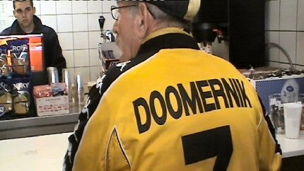

|
Roda JC - FC Den Bosch (5-0) 24 oktober 2004 |
Roda JC
- FC Den Bosch (5-0) 24 oktober 2004
Zondag in het zuiden. Prachtig weer, prachtig stadion....
We dachten even dat Arno Doomernik bij de kassa stond.

Maar dat bleek een misverstand, hij was al lang binnen....
Z16-voorpret.
Bodnar met hanenkam speciaal voor de Hanebretboys! Forza
Laszlo!!!!
Den Bosch heeft een goed zangkoor.
250 Bosschenaren, dat zijn er al 100 meer dan de vorige keer!
Tussen de broeken van tegenwoordig en die van de tachtiger
jaren zit toch wel een centimeter of 20...
Topweekend voor deze gast. Bijna al zijn favo's wonnen.
Bodnar speelt een prima wedstrijd en is verbaal de sterkste
man in het veld. Een ware aanvoerder,
(in spe...?)
Korte mededeling tussen de vele kansen van Roda door.
Blessure van doelman Mampaay van Den Bosch.
Later als je groot bent en Rodameëdsje wil worden moet je wel
liever kijken...
Compleet belachelijke kaart voor Bodnar. Bijna net zo
belachelijk als de kaart voor Snoyl verderop.
Bodnar wijst Sergio de weg naar Sonko (rechtsbuiten).
Sonko legt de bal dan panklaar voor Kone...

...die schitterend inkopt: 1-0 (40').
Mooi uitgespeelde goal van Kone: 2-0 (47').
De nieuwe tattoo van Kim.
Filipovich passt mooi op Kone die (waarschijnlijk) via een
been van een Bosschenaar scoort: 3-0 (64').
Oom agent had wederom een rustige dag.
Na goed voorbereidend werk van Cristiano kan Sergio 4-0
inschieten (69').
En zo werd het steeds gezelliger in Z16 (en ongetwijfeld ook
in andere vakken, op dat ene dan na).
Den Bosch krijgt met name in de slotfase enkele goede kansen
zoals deze inzet die van de lijn wordt
gehaald.
Een afgeblokt schot van Sonko wordt alsnog ingeschoten door
Cissé: 5-0, (88').
Den Bosch houdt het voor gezien....
Danke...Bitte...
Jammer jongens, grijs kenteken moet ook vol gaan dokken
binnenkort...
Het was weer erg gezellig in de Kick Off.
Bier rein, Bier raus! Op verzoek van de plasser is deze
onherkenbaar in beeld gebracht.
De Kick Off werd bezocht door Cissé, Vandenbroek en Filipovich.
Met Klotzkop en Co. op de foto :-))) Forza Hoenzbroek....
De Tanzmariechen van de Kick Off.
"We zijn vandaag zo vrolijk...". Forza Jan Lutjens!
American style... all the way to Snow World.
Jos temidden van twee aankomende Rodameëdsjer. De hamburgers
waren niet lekker,
Nicolien Sauerbreij wel ;-)